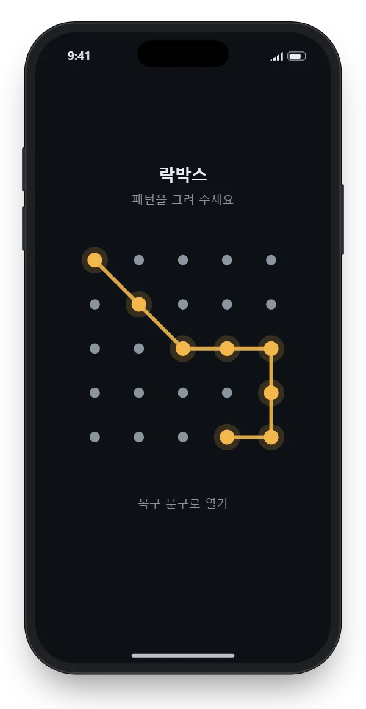

폰 빌려줄 때 사진 안 보이게 하는 법, 건네기 전 5가지 점검
길 찾기나 전화 한 통 때문에 폰을 건넸는데, 상대 손가락이 사진 앱으로 가는 순간이 있습니다. 아이폰은 폰을 건네기 전 몇 가지만 해 두면 그 순간을 막을 수 있습니다.
결론부터: 가장 확실한 방법은 사용법 유도입니다. 건넬 앱을 연 뒤 측면 버튼을 세 번 누르고 시작하면, 그 앱 밖으로 나갈 수 없습니다. 미리 사진 앱에 Face ID 요구를 걸고 민감한 사진은 가리기 해 두면 실수로 앱을 벗어나도 한 번 더 막힙니다. 다만 폰 암호를 아는 사람에게는 둘 다 열리니, 그런 사이라면 따로 잠기는 금고에 두세요.
건네기 전 5가지 점검
미리 한 번만 설정해 두면, 건넬 때는 버튼 세 번이면 됩니다.
| 점검 | 막아 주는 것 | 어디서 |
|---|---|---|
| 1. 사용법 유도 켜 두기 | 건넨 앱 밖으로 나가는 것 | 설정 → 손쉬운 사용 → 사용법 유도 |
| 2. 사진 앱에 Face ID 요구 | 사진 앱을 여는 것 | 사진 앱 아이콘 길게 터치 → Face ID 요구 |
| 3. 민감한 사진 가리기 | 보관함에 사진이 뜨는 것 | 사진 열기 → 더보기(…) → 가리기 |
| 4. '가려진 항목' 앨범 보기 끄기 | 숨긴 모음이 있다는 티 | 설정 → 앱 → 사진 |
| 5. 알림 미리보기 '안 함' | 메시지로 온 사진·내용이 화면에 뜨는 것 | 설정 → 알림 → 미리보기 표시 |
5번은 놓치기 쉽습니다. 미리보기 표시를 '잠겨있지 않을 때'로 두면, 잠금을 풀어 건넨 동안에는 미리보기가 그대로 보입니다. 폰을 자주 빌려준다면 '안 함'이 맞습니다.
사용법 유도로 한 앱만 열리게 하기
애플이 자녀에게 폰을 줄 때 쓰라고 만든 기능입니다. 애플 지원 문서 기준 순서입니다.
- 설정 → 손쉬운 사용 → 사용법 유도를 켭니다.
- 암호 설정에서 사용법 유도 암호를 정하고, 끝낼 때 Face ID를 쓸지 고릅니다. 폰 잠금 암호와 다른 숫자로 정하세요.
- 건넬 앱(전화, 지도, 메신저 등)을 엽니다.
- 측면 버튼을 세 번 누르고 시작을 누릅니다. 홈 버튼 기종은 홈 버튼을 세 번 누릅니다.
- 돌려받으면 측면 버튼을 다시 세 번 누르고 인증한 뒤 종료를 누릅니다.
시작 화면에서 손가락으로 원을 그리면 그 영역의 터치가 막힙니다. 메신저를 건넬 때 사진 첨부 버튼 자리에 원을 그려 두면 앨범으로 넘어가는 길도 막을 수 있습니다. 세션 설정에서는 버튼, 키보드, 터치, 시간 제한을 따로 정할 수 있습니다.
앱을 벗어나도 막히게: 사진 앱 잠그고 가리기
사용법 유도를 깜빡하는 날을 위한 두 번째 문입니다. iOS 18부터 됩니다.
- 홈 화면에서 사진 앱 아이콘을 길게 터치하고 Face ID 요구를 두 번 탭합니다.
- 사진 앱에서 민감한 사진을 열고 더보기(…) → 가리기를 누릅니다.
- 설정 → 앱 → 사진에서 '가려진 항목' 앨범 보기를 끕니다.
잠근 앱의 내용은 알림 미리보기, 검색, Siri 제안에도 나오지 않습니다. 자세한 순서와 한계는 아이폰 앱 잠금 방법, Face ID로 잠그고 숨겨도 드러나는 4곳과 아이폰 사진 숨기기 3가지 방법, 폰 빌려줄 때도 안 들키게에 정리했습니다.
폰 암호를 알아도 못 여는 사진 금고.
락박스는 사진을 서버에 올리지 않고 아이폰 안에서만 암호화합니다.
그래도 드러나는 경우 점검표
- 사진 앱을 연 채 건넸다: 사용법 유도를 사진 앱에서 시작하면 그 앱 안의 다른 사진은 넘길 수 있습니다. 사진 1장을 보여 줄 때는 세션 설정에서 터치를 끄세요.
- 잠금을 풀어 둔 화면 그대로 건넸다: 가려진 항목을 열어 둔 채면 다시 인증하지 않아도 보입니다.
- 상대가 폰 암호를 안다: Face ID 요구도, 가려진 항목 잠금도 Face ID가 실패하면 폰 암호로 열립니다.
- 메신저 대화방 사진: 사진 앱에서 가린 사진도 대화방 사진함에는 그대로 남습니다.
- 사용법 유도 암호가 폰 암호와 같다: 상대가 폰 암호를 알면 세션도 끝낼 수 있습니다.
- 급한 전화가 필요할 수 있다: 애플 안내에 따르면 사용법 유도 중에는 충돌 감지와 긴급 서비스를 쓸 수 없습니다.
폰 암호를 아는 사람에게 빌려줄 때
가족이나 연인처럼 폰 암호를 아는 사이라면 아이폰 기본 잠금은 모두 열립니다. 그럴 때는 폰 암호와 다른 비밀번호로 잠기는 곳이 필요합니다. 락박스는 3×3·5×5 패턴이나 PIN으로 따로 잠기고, 사진·동영상·신분증을 아이폰 안에서 AES-256-GCM으로 암호화합니다. 서버가 없어서 만든 사람도 열 수 없습니다.


틀린 시도는 침입 기록에 남습니다. Pro의 숨은 금고와 위험 패턴을 쓰면, 다른 패턴을 그렸을 때 진짜 금고 대신 다른 화면이 열립니다. 비밀번호를 잊으면 한글 12단어 복구 문구로만 다시 열 수 있습니다. 앱 고르는 기준은 사진 금고 앱 추천 전 꼭 볼 것: '만든 회사도 못 여는' 앱 고르는 5가지 기준을 참고하세요.
폰 암호와 다른 비밀번호로, 만든 사람도 못 여는 금고.
무료로 10개까지 넣어 볼 수 있습니다.
자주 묻는 질문
사용법 유도는 어떻게 끝내나요?
측면 버튼(홈 버튼 기종은 홈 버튼)을 세 번 누르고, 사용법 유도 암호나 Face ID로 인증한 뒤 종료를 누릅니다.
사진 앱에 Face ID를 걸면 폰 암호로는 못 여나요?
아니요. Face ID가 실패하면 폰 잠금 암호로 열립니다. 폰 암호를 아는 사람에게는 소용이 없습니다.
메시지로 온 사진이 화면에 뜨지 않게 하려면?
설정 → 알림 → 미리보기 표시에서 '안 함'을 고릅니다. '잠겨있지 않을 때'는 잠금을 푼 상태에서 미리보기가 보입니다.
사용법 유도 중에도 전화를 걸 수 있나요?
건넨 앱 안에서만 쓸 수 있습니다. 애플 안내에 따르면 긴급 서비스도 쓸 수 없으니, 급한 상황이면 세션을 끝내고 쓰세요.